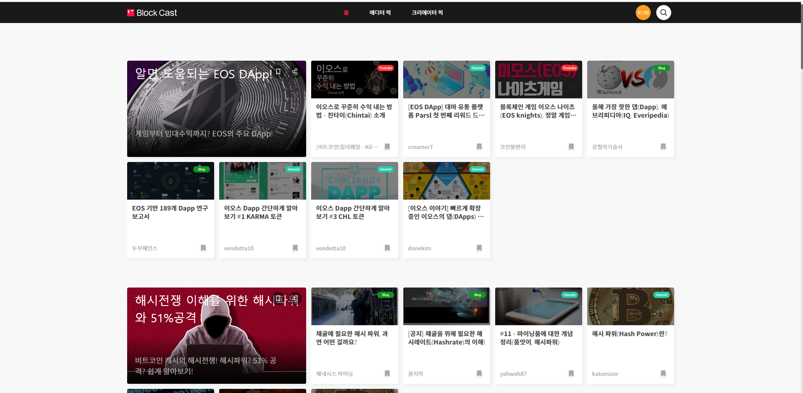
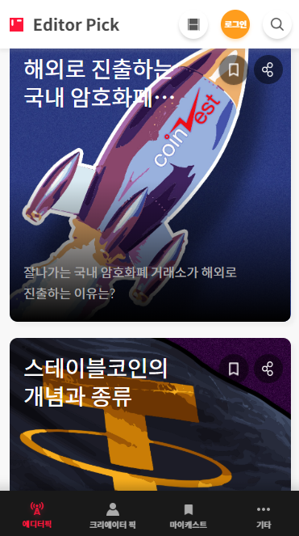

PC/Mobile Site, HTML, CSS, JavaScript
 
작업1. 스크랩 모션
작업2. 선택한 view 타입으로 바꾸기
작업3. value 값 구분하기
작업4. slideDown/slideUp 이벤트를 이용 한 게시판
1.스크랩 모션
스크랩 아이콘 클릭 시
HTML : 스크랩 모달 div 태그를 만듭니다.
CSS : 스크랩 모달이 위에서 나오는 효과는 top이 -100에서 0으로 바뀌면서 만들어진 효과이며, 스크랩 생성 시 메뉴가 좌우로 흔들리는 효과는 @keyframes을 이용 하여 %분기로 rotate 값을 줘서 animation으로 움직 일 수 있게 만들었습니다.
JS : 스크랩 모달이 나타날때 사라질때 fadeIn/fadeOut을 사용 했으며,효과는 css에 입력 된 class를 addClass/removeClass 로 작업 했습니다.
또한 input에는 keydown을 이용 하여 값 입력 시 스크랩 생성 버튼이 빨강으로 변하게 작업 했습니다.
2.선택한 view 타입으로 바꾸기
JS : 선택된 option 'this' background-image를 select img로 변환(옮겨담기)하기. 변수 img에 'this' background-image 값을 담습니다. option 'this' 클릭 시 select img는 .css({'background-image' : img}); 통해 선택된 option 'this'의 img가 select img로 들어가게 합니다.
3.value 값 구분하기
텍스트 입력 시 왼쪽 반달 포인트에 파란색이 채워지게 작업 했습니다.
JS : if("" == input.val() || null == input.val()) { 파란색 지워집니다 } else { 파란색 채워집니다 }
4.slideDown/slideUp 이벤트를 이용 한 게시판
JS : slideDown/slideUp 이벤트를 이용 한 게시판